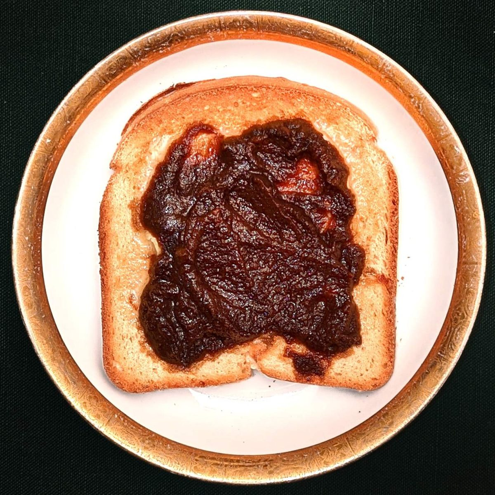
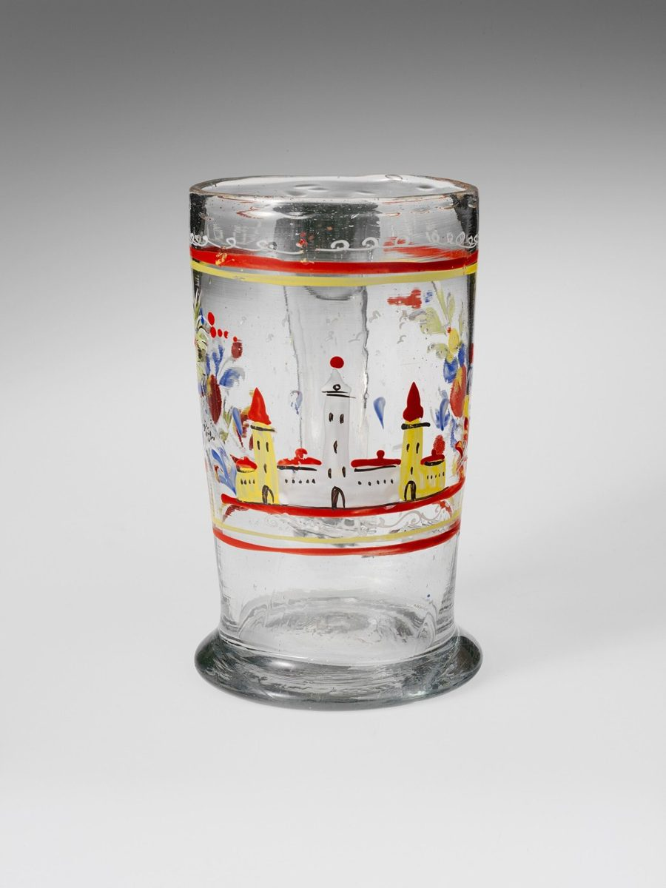

ABOUT
お店のこと
Cafe Tは、愛知県豊田市小坂本町の閑静な住宅街にあるコンテナハウスのカフェです。豊田市美術館の近くにあり、2021年2月に開店したと紹介されています。コンテナのまわりにテーブルが数卓並び、気軽に立ち寄れる雰囲気です。
コーヒーやクラフトビールなどのドリンクと、サンドイッチなどの軽食、スイーツが紹介されています。テイクアウトにも対応しているとのことです。
- 所在地
- 〒471-0034 愛知県豊田市小坂本町7丁目63-1
- 電話
- 準備中
- 営業時間
- 準備中
- 定休日
- 準備中
※営業日・時間は掲載媒体によって異なるため、お出かけ前にInstagramでご確認ください。
MENU
メニュー
紹介されている提供内容の種類です。品目・価格・詳細は準備中です。






VOICE
口コミ(イメージ例)
以下は制作側が作成したイメージ例で、実在のお客様の声ではありません。
イメージ例
美術館の帰りに寄れそうな場所で、散歩の途中にふらっと入れそうです。
イメージ例
外のテーブルでコーヒーを飲んでのんびりしてみたいです。
イメージ例
営業時間が分かったら、予定を立てて行ってみたいです。